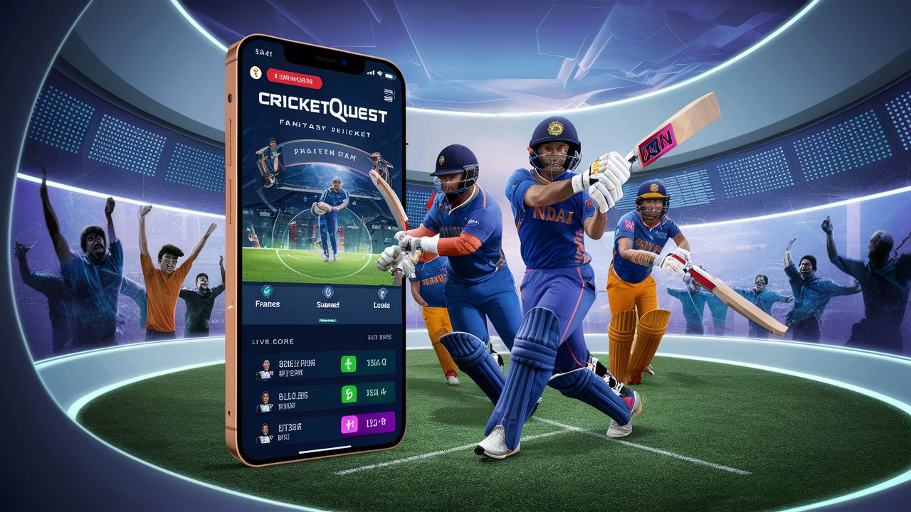
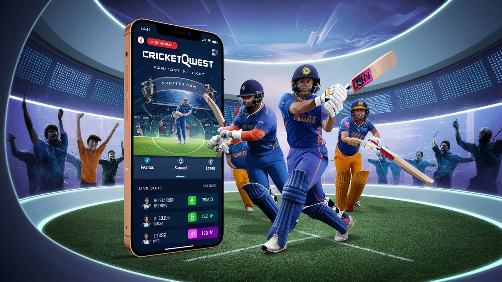

Welcome to CricketQuest - Your Ultimate Fantasy Cricket Adventure!
Dive into the thrilling world of fantasy cricket! Build your dream team, predict match outcomes, and compete with friends and other cricket enthusiasts from around the globe. CricketQuest offers you an unparalleled experience filled with excitement, strategy, and endless possibilities. Join us now and embark on your journey to cricket glory, where every match is a new quest and every victory brings you closer to becoming a legend!

Fair Play and Integrity
At CricketQuest, we believe in maintaining the highest standards of sportsmanship and integrity. All participants are expected to play fair, respect their opponents, and adhere to the rules. Cheating, collusion, or any form of dishonest behavior will not be tolerated and may result in immediate disqualification.
Active Participation
To ensure an engaging and dynamic experience for all, we encourage active participation. Set your lineups, make timely predictions, and stay involved throughout the season. Regular activity not only enhances your own experience but also contributes to a vibrant and competitive community.
Respect and Community
CricketQuest is more than just a game; it's a community of passionate cricket fans. We foster an environment of mutual respect and camaraderie. Whether you’re discussing strategies, celebrating victories, or learning from defeats, always treat your fellow players with kindness and respect. Let's make CricketQuest a fun and welcoming space for everyone.
The Essence of Cricket: Tradition, Strategy, and Sporting Excellence
Cricket is a bat-and-ball game that has captured the hearts of millions around the world. Originating in England in the 16th century, it has evolved into a global sport played and adored by enthusiasts in numerous countries. With its unique blend of strategy, skill, and athleticism, cricket offers a rich and engaging experience for players and fans alike.
At its core, cricket is a contest between two teams, each consisting of eleven players. The game is played on a circular or oval-shaped field with a 22-yard long rectangular pitch at the center. The primary objective is to score more runs than the opposing team. Runs are scored by hitting the ball and running between the wickets, or by hitting the ball to the boundary.
Cricket comes in several formats, each with its own unique appeal. The most traditional form is Test cricket, played over five days with unlimited overs. One-Day Internationals (ODIs) are limited to 50 overs per side, offering a more concise but equally thrilling experience. Twenty20 (T20) cricket, the newest and shortest format, consists of 20 overs per side, providing fast-paced and high-energy matches that are popular among new audiences.
Cricket is often referred to as the "gentleman's game," emphasizing the importance of sportsmanship and fair play. The spirit of cricket is upheld through respect for opponents, umpires, and the rules of the game. Players are expected to compete with integrity, and any form of unsportsmanlike behavior is discouraged.
Each player in a cricket team has a specific role, whether as a batsman, bowler, or all-rounder. Batsmen aim to score runs by hitting the ball, while bowlers try to dismiss the batsmen by delivering the ball in ways that are difficult to hit. All-rounders contribute in both batting and bowling, offering versatility to the team. Additionally, wicketkeepers play a crucial role in catching balls and making stumpings.
Cricket has a rich history of iconic matches and prestigious tournaments. The Ashes, contested between England and Australia, is one of the oldest and most celebrated rivalries in sports. The Cricket World Cup, held every four years, is the pinnacle of the ODI format, bringing together the best teams from around the world. T20 leagues like the Indian Premier League (IPL) have also gained immense popularity, featuring star players and thrilling matches.
While cricket's roots are in England, its reach has expanded globally. Countries like India, Australia, Pakistan, South Africa, and the West Indies have become powerhouses of the sport. Cricket's global appeal continues to grow, with new regions embracing the game and contributing to its development. International tours, bilateral series, and global tournaments have all played a part in spreading cricket's influence.
The future of cricket looks bright, with innovations and
advancements continuing to shape the sport. Technological
developments such as the Decision Review System (DRS) have
enhanced the accuracy of umpiring decisions. Efforts to make
cricket more accessible and inclusive are underway, ensuring that
the game can be enjoyed by people of all ages, genders, and
backgrounds. As cricket evolves, its timeless charm and excitement
remain at its core, captivating generations of fans.
Cricket is not just a sport; it's a tradition, a passion, and a
way of life for many. Whether you’re a seasoned fan or new to the
game, cricket offers a world of excitement and camaraderie, making
it a truly special experience.
Understanding Application Types: A Comprehensive Overview


 

Discover CricketQuest: Innovating for a Connected World
At CricketQuest, our mission is to pioneer innovative solutions that empower individuals and organizations in navigating and thriving in an increasingly interconnected world. We are committed to harnessing technology to drive positive change, enhance efficiency, and foster meaningful connections across diverse industries and communities.
CricketQuest emerged from a vision. Since our inception, we have grown into a dynamic team passionate professionals dedicated to delivering cutting-edge that redefine industry standards and exceed client expectations.
Integrity, innovation, and inclusivity define our core values at CricketQuest. We prioritize transparency in our operations, cultivate a culture of continuous learning and creativity, and celebrate diversity as a source of strength and innovation. These values guide every decision and action we take, ensuring alignment with our mission and commitment to excellence.
With deep expertise, CricketQuest specializes. Whether it's developing scalable software solutions, implementing strategic consulting services, or delivering customized training programs, our multidisciplinary approach enables us to address complex challenges and seize emerging opportunities with agility and foresight.
Beyond business success, CricketQuest is dedicated to making a positive impact in the communities we serve. Through philanthropic initiatives, environmental sustainability efforts, and partnerships with local organizations, we strive to create a lasting legacy of social responsibility and contribute to building a more inclusive and sustainable future.

At CricketQuest, we are a trailblazing team united by a shared passion for innovation and a commitment to delivering exceptional that drive tangible results for our clients. We have been at the forefront, continuously pushing boundaries and setting new benchmarks for excellence.
Our vision is to be the leading innovator globally, renowned for our transformative solutions and unwavering dedication to customer satisfaction. We aspire to empower businesses and individuals alike through technology-driven insights, strategic partnerships, and a relentless pursuit of innovation that anticipates and meets evolving market needs.
Integrity, customer-centricity, and collaboration are the cornerstones of our approach at CricketQuest. We uphold the highest ethical standards in all our endeavors, prioritize understanding and exceeding our clients' expectations, and foster a culture of teamwork and mutual respect. These principles guide our interactions internally and externally, ensuring enduring partnerships and mutual success.
Through our innovative, CricketQuest has catalyzed positive change and driven measurable outcomes across. From streamlining operations and enhancing productivity to enabling digital transformation and unlocking new growth opportunities, our solutions empower organizations to thrive in a rapidly evolving marketplace.
Looking ahead, CricketQuest remains committed to continuous innovation and agility in responding to emerging trends and challenges. We are poised to expand our footprint globally, forge strategic alliances, and leverage emerging technologies to sustain our leadership position and deliver unparalleled value to our clients and stakeholders.
Testimonials of Satisfaction
Aarav Patel
"Working with CricketQuest through their website has been incredibly productive. Their team of professionals provided us with innovative solutions that significantly improved our efficiency and helped save time and resources."
✭✭✭✭✭
Riya Gupta
"I am pleasantly surprised by the level of service provided by CricketQuest on their website. Their experts not only developed customized solutions for us but also supported us throughout our collaboration."
✭✭✭✭✭
Arjun Sharma
"CricketQuest is a fantastic fantasy cricket app. I enjoy creating my own teams and competing against other users. It adds an extra element of excitement to watching cricket matches."
✭✭✭✭✭
Ananya Reddy
"Choosing CricketQuest was the right decision for us. They understood our unique needs and delivered solutions that exceeded our expectations."
✭✭✭✭✭
Krish Mehra
"I highly recommend CricketQuest for their professionalism and effective solutions. They have been instrumental in our growth journey."
✭✭✭✭✭
Nisha Kapoor
"The team at CricketQuest has been supportive and proactive. Their commitment to customer satisfaction is commendable, and we look forward to continuing our partnership."
✭✭✭✭✭
CricketQuest Fantasy Sports FAQ
What is CricketQuest Fantasy Sports?
CricketQuest Fantasy Sports is an online platform where cricket enthusiasts can create fantasy teams using real players and compete based on their actual performances in matches.
How does CricketQuest Fantasy Sports work?
To participate in CricketQuest Fantasy Sports, you select players for upcoming matches and build your fantasy team within a set budget. Points are awarded based on the players' performances in real matches, such as runs scored, wickets taken, catches, and more.
What are the benefits of playing CricketQuest Fantasy Sports?
Playing CricketQuest Fantasy Sports enhances cricket knowledge, allows for strategic team management, provides competition with friends or other participants, and offers the chance to win prizes based on performance and rankings.
How can I join CricketQuest Fantasy Sports?
Joining CricketQuest Fantasy Sports is easy. You can sign up on our website or download the mobile app, create your account, and start building your fantasy team for upcoming matches. Participation may require a nominal entry fee depending on the contest.
Is CricketQuest Fantasy Sports legal?
Yes, CricketQuest Fantasy Sports operates within the legal framework of fantasy sports gaming. We adhere to all relevant laws and regulations to ensure a fair and secure environment for all participants.
How are points calculated in CricketQuest Fantasy Sports?
Points in CricketQuest Fantasy Sports are calculated based on the actual statistical performances of selected players in live cricket matches. Points can be earned for various actions such as runs, wickets, catches, and more.
What types of contests are available on CricketQuest Fantasy Sports?
CricketQuest Fantasy Sports offers various contests including daily leagues, mega contests, private leagues among friends, and special tournaments during major cricket events. Each contest may have different entry fees, prize structures, and rules.
How secure is my information on CricketQuest Fantasy Sports?
At CricketQuest Fantasy Sports, we prioritize the security and privacy of our users' information. We use advanced encryption and secure payment gateways to safeguard your data and ensure a safe gaming experience.